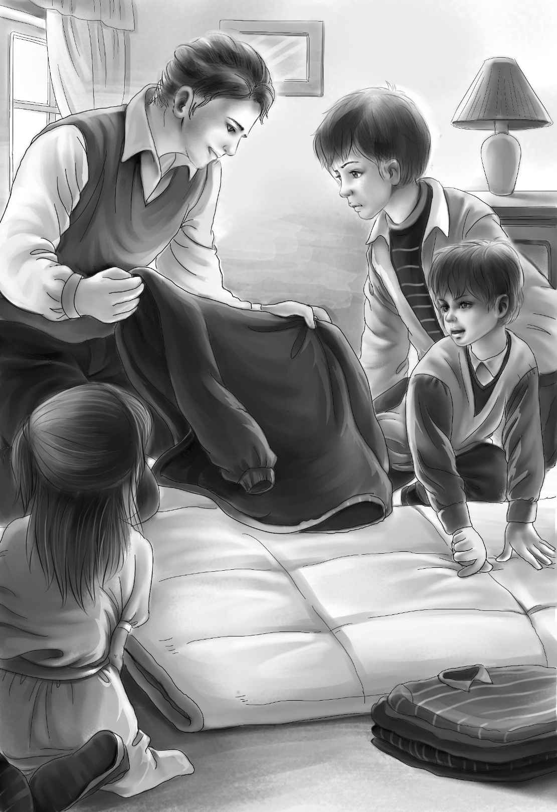

Mr. Alden read the letter again. Then he said， “Jessie， you say we don’t know any more than we did. But I think we do.”
“Right，” said Jessie， laughing. “I think so myself， now. We know there is something up in Maine anyway.”
“Yes， and we know more than that，” said her grandfather. “I had better tell you one other thing. Just before Bill disappeared， he sold two fine race horses for your great-grandfather. But he never paid over the money. He kept saying he would， but he never did. I always thought his brother got it away from him， and Bill went away to get it back. I may be wrong.”
Joe said， “Maybe Bill was afraid to come back without the money.”
“That’s what we thought，” said Mr. Alden.“ You see， the week after Bill disappeared， his brother Sam was killed by a car. So he couldn’t help us find Bill.”
“Did Mrs. McGregor know about the race horses and the money？” asked Jessie.
“Yes. Poor Margaret！ She never got over it，” answered Mr. Alden. “But she never thought Bill took the money.”
“We know more than that， Uncle James，” said Joe. “We know it has something to do with Bear Trail.”
“Do you know what Bear Trail means？” asked Benny.
“Yes， I went over Bear Trail when I was fifteen years old，” answered Joe.
“So you did， my boy！” cried Mr. Alden. “On that trail you have to go miles in a canoe，and then carry the canoe. You were very strong when you came back from that first trip.”
“I liked it so well that later I was a guide for two years，” said Joe. “But I haven’t seen Bear Trail for a long time.”
“Where is this Bear Trail？” asked Alice.
“Let’s go home，” said Joe for an answer. “I can show you on the map.”
“O.K.” said Benny. “I don’t think we’ll find any more clues in this room.”
When they were driving home， Alice said， “I can’t think what the little house in Maine means. Bill’s yellow house is on Surprise Island.”
“We’ll have to solve the other mysteries first， I guess，” said Henry. “Then maybe we will understand the rest.”
“You all sit on the porch while I get the map，” said Joe， stopping the station wagon at the front steps.
Soon the map was open on the porch table. The children sat around it. Joe began to point with his pen.
“Bear Trail starts from the highway right here，” he said.
“Then you come to a lake. Here it is. There is a camp on this lake. Anyway， there used to be.”
“That’s where the canoe comes in？” Benny asked.

“Right. It’s a beautiful trip. I think I know exactly where to go from here. You paddle the canoe as far as you can. Then you get out and carry the canoe. The woodsmen call that a ‘carry.’ You can go miles and miles this way. You don’t see a house for days.”
Henry looked at his grandfather. Jessie did the same. Everyone on the porch was looking at Mr. Alden as he sat in his easy chair.
“Yes， yes！ I know what you want！” he said， smiling and nodding his head. “You all want to go up to Maine and hunt for Bill.”
“Yes， that’s it， Grandfather，” said Benny.“ But you always let us do things in summer when there isn’t any school. Joe and Alice want to go too.”
Mr. Alden looked at Joe sharply. “Do you？” he asked.
“Yes， we really do，” said Joe， after looking at Alice. “We both love a mystery. We both love camping and canoeing. Alice is a great paddler in a canoe， and I have two weeks left before I have to go back to work.”
“Well，if you want to spend your two weeks that way， it’s all right with me，” said Mr. Alden at last.
“He means we can all go！” shouted Benny.“ Don’t you， Grandfather？”
“I suppose so，” said Mr. Alden. “You’ll have to carry a lot of things with you. Those ‘carries’ are hard work， my boy.”
“Henry’s strong，” said Benny. “He could carry a lot of things. And so could Alice. She’s very strong， too.”
“Well， well！ Thank you， Benny，” said Alice， surprised.
“We’ll all be stronger when we get home，” said Henry. “I’ve been wondering what that letter means， Grandfather. Just as Alice said， ‘Your little house in Maine.’ His yellow house is on Surprise Island.”
“I don’t know myself，” said Mr. Alden. “But I know that Bill built the yellow house on Surprise Island. He did all the work himself with the help of his brother.”
“Brother？ Does this brother have anything to do with this mystery？”
“Yes， I’m afraid so，” said Mr. Alden. “I never liked his brother. He was always in trouble.”
“You think Bill’s brother wrote the letter？” asked Jessie.
“I certainly do，” said Mr. Alden. “I think S. M. means Sam McGregor.”
“Ho-hum，” said Benny.
“Now what does that mean-Ho-hum？” asked Joe， laughing.
“It means we’d better stop talking and get started on this trip，” said Benny.
“What a family！” said Joe. “Always doing something exciting.”
Mr. Alden said， “You might as well get some of your things ready right away.”
“Oh， let’s，” said Benny， jumping up.
Joe stood up too， and began to think aloud. “We can get two canoes up there，” he said slowly. “Do you think you could carry one， Henry， with one of the others to help you？”
“I’m sure I could，” said Henry. “We can’t take too many things. We’ll have to carry food， and packs on our backs， won’t we？”
“That’s right，” said Joe. “We can get tents up there too. There is a store on that first lake where we can buy what food we need for the trip. We don’t have to carry the canoes very far.”
“We can go to Maine in the station wagon，Joe，” said Violet softly.
“Right，” said Joe， smiling at his little cousin. “I knew that was a good thing to buy. Now you children get to work and write down the things you want to take. We can get blankets up there，too.”
“No， sir！ You take blankets from here， Joe，” said Mr. Alden suddenly. “Get your clothes and blankets made into packs right here where I can see them. I’m not going to have Violet get cold sleeping in the Maine woods.”
Soon there was a great noise around the house. The children ran up and down stairs. Watch went up and down every time. Then Joe showed them how to make sleeping bags. First the blankets were put on the floor and folded once. Then they were sewed on one side to make a bag. Their clothes were put in piles on the blankets.
“Now fold them over and over this way，” said Joe， “and put these straps around them. I have a lot more straps in my camping things.”
“I see，” said Benny. “The strap goes around your back. Mine isn’t heavy at all. I could carry some bacon and eggs too.”
“Bacon，”said Henry，“but no eggs. We can’t take eggs， can we， Joe？”
“Not whole eggs，” said Joe. “Dried eggs. We can have scrambled eggs. Dried milk and canned milk， both.”
“Dried everything，” said Benny. “I don’t care.”
Before night came， the family was ready for the trip.
Then Joe turned to his uncle. “Don’t be worried， Uncle James，” he said. “I promise you we will stop and eat on the way up. We’ll eat well before we go on the canoe trip. Then we will be all right for a few days， if we don’t have so much to eat.”
“Good，” said Mr. Alden. “Everything is ready then.”
“No，” said Jessie. “Nobody has said anything about Watch.”
“Oh， we can’t take the dog！” began Joe. “He might tip the canoe over.”
Then he looked at the faces of the four children. They were thinking fast. He went on， “Really， I don’t think we had better take Watch.”
“You’re right， Joe，” said Henry at last.“We can’t take Watch. But he will have a good time at home.”
“Yes，” said Mr. Alden. “Watch will keep me from being lonesome， and I will keep him from being lonesome.”
Benny made them all feel better by saying，“Let’s have him stay home. But don’t let’s tell him he can’t go until tomorrow.”